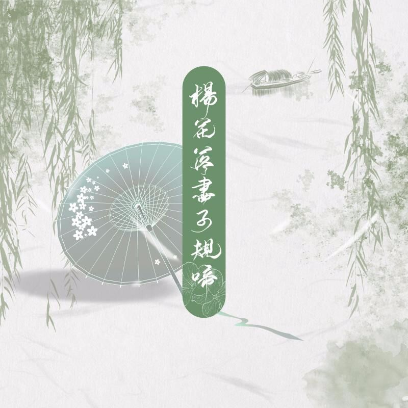

歌手信息
歌手名称
歌手介绍
黄诗扶自幼开始学习音乐，
2014年，开始任上海市市宫茉莉花民族乐团高胡乐手，
期间跟随乐团参加上海市市宫民乐团暨国庆献礼演出《我的祖国》、贺绿汀音乐厅“上海之春”民族音乐会、
“反法西斯70周年”上海音乐厅音乐会“同沐胜利荣光共创复兴辉煌”、贺绿汀音乐厅“上海之春”民族音乐会等活动。
2015年，从上海师范大学录音艺术专业毕业；
2017年，从英国布里斯托大学影视音乐作曲专业毕业，并取得硕士学位。
早期主攻二胡演奏、音乐制作，多为他人作曲。
2019年，发布个人首张专辑《人间不值得》，正式由幕后转向台前。
专辑列表

热门歌曲
吹梦到西洲
歌手: 恋恋故人难/黄诗扶/妖扬
专辑: 吹梦到西洲
时长: 5:16
发行时间: 2019-07-10
曲风: 国风-古风 语种: 华语杨花落尽子规啼
歌手: G2er/黄诗扶/国风堂
专辑: 杨花落尽子规啼
时长: 3:45
发行时间: 2019-07-05
曲风: 国风-古风 语种: 华语人间不值得
歌手: 黄诗扶
专辑: 人间不值得
时长: 4:45
发行时间: 2019-01-18
曲风: 国风-国风流行 语种: 国语